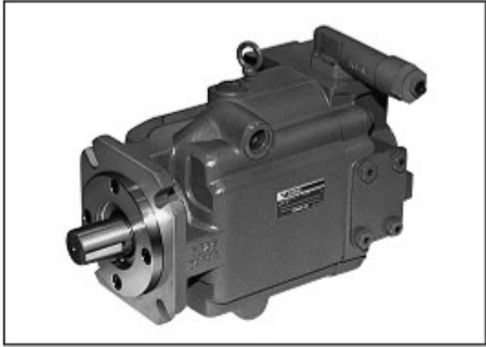
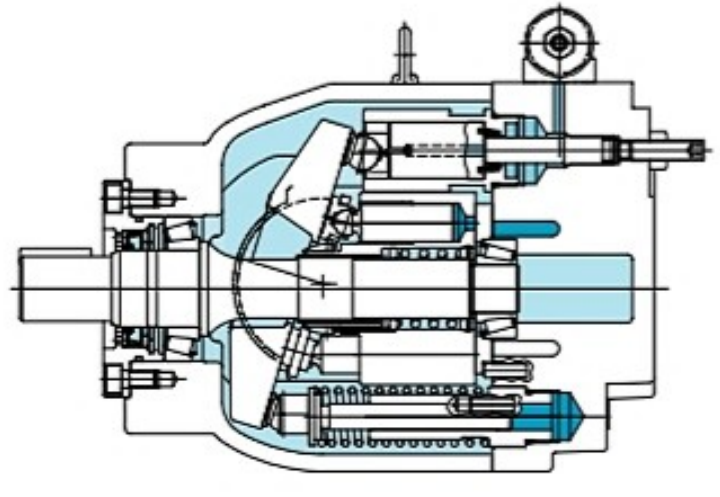
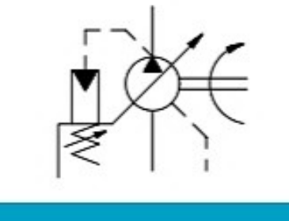

펌프 시리즈
PH80 · PH100 · PH130
HYDRAULICS / PISTON PUMP / PH SERIES
제품소개 › 유압 › 펌프 › 피스톤 펌프
Low noise, high pressure variable displacement piston pumps
PH 시리즈의 제품별 기술 자료와 기본 사양을 빠르게 확인할 수 있습니다.

HIGH PRESSURE\nPISTON PUMP
PRODUCT TECHNICAL DATA
제품 외관, 내부 단면 및 유압 심벌을 통해 PH 시리즈의 기본 구성과 적용 특성을 빠르게 확인할 수 있습니다.

PRODUCT TECHNICAL DATA
PH 시리즈는 고압 유압 회로에 대응하는 가변용량형 피스톤 펌프입니다. 내부 구조와 유압 심벌, 모델 코드를 함께 제공해 필요한 제어 방식과 사양을 빠르게 검토할 수 있도록 구성했습니다.

MODEL & SPECIFICATION
MODEL CODE
위 번호는 아래 선택 항목과 대응합니다. 실제 형식 선정은 운전 조건에 따라 기술 검토가 필요합니다.
PH80 · PH100 · PH130
M : 표준
S : 싱글 펌프
무기호 : 플랜지 취부형 / F : FOOT 취부형
X : SAE 사각키 샤프트 / Y : 롱샤프트
R : 우회전 / L : 좌회전
표준 사양에 따른 설계 번호
CH · CGH · CVH · TL/TH · EDHS
무기호 : 없음 / D : 있음
표준 제어 밸브 디자인 번호
S38 : T/L 적용형 / 무기호 : 그 외
STANDARD SPECIFICATION
| 형식 | 최대 이론용적\ncm³/rev | 사용압력\nMPa | 최고 회전수\nmin⁻¹ | 최저 회전수\nmin⁻¹ | 무게\nkg |
|---|---|---|---|---|---|
| PH80 | 80 | 정격 28 / 간헐 30 | 1,800 | 600 | 51 |
| PH100 | 100 | 정격 28 / 간헐 30 | 1,800 | 600 | 70 |
| PH130 | 130 | 정격 28 / 간헐 30 | 1,800 | 600 | 95 |
DOCUMENT ACCESS
자료를 전에 확인해 주세요.